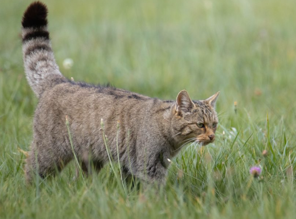

Especies de Felinos en España

Lince Ibérico (*Lynx pardinus*)
El lince ibérico es uno de los felinos más emblemáticos de España. Se encuentra principalmente en Andalucía, Extremadura y Castilla-La Mancha. Es una especie en peligro de extinción, pero los esfuerzos de conservación han logrado aumentar su población en los últimos años.

Gato Montés (*Felis silvestris*)
Este pequeño felino habita en bosques y zonas montañosas de toda España. Es un hábil cazador y se caracteriza por su robusto pelaje y su cola gruesa con anillos oscuros.